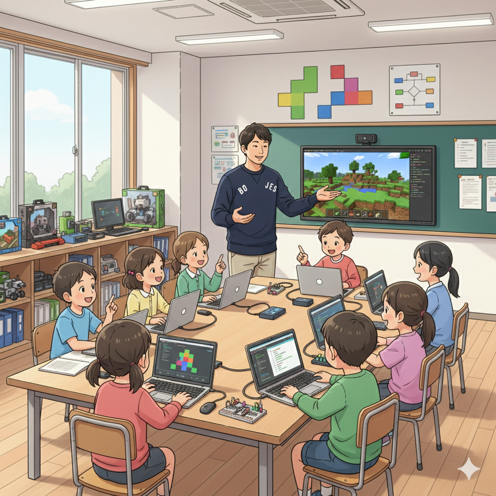

集中力と創造性を活かす！Minecraft×プログラミングの魅力 (CTO)
皆さん、こんにちは！if塾のCTOです。僕は小さい頃からゲームが大好きで、特にマインクラフトには夢中でした。周りの友達が普通に遊んでいる中、僕はもっと深く、もっと自由に世界を創りたかったんです。そこで出会ったのがコマンドブロック。これを使うことで、マインクラフトの世界に独自のルールや仕掛けを組み込むことができるんです。
発達特性のある僕は、一度好きなことを見つけると、周りが見えなくなるくらい没頭してしまうことがあります。その集中力と、頭の中に広がる無限のアイデアを形にするために、コマンドブロックを使ったプログラミングにのめり込みました。試行錯誤を繰り返すうちに、論理的思考力も自然と身についていきました。
if塾では、僕のような子どもたちが、自分の特性を活かしながら、マインクラフトを通じてプログラミングを学んでいます。ゲーム好きが高じて、将来はゲーム開発者やエンジニアを目指す子もいるんですよ！
最近話題の発達障害 AIの研究も、こういったゲームを通じた学習効果を分析することで、より効果的な支援方法が見つかるかもしれませんね。
小さな成功体験の積み重ねが自信に繋がる (塾長)

塾長の山﨑です。私自身、ADHDとASDの診断を受けていて、子どもの頃は学校に馴染めず苦労しました。でも、高校生の時に塾頭と出会い、自分の特性を理解し、強みに変えることができたんです。
マインクラフトでのプログラミングは、小さな成功体験の宝庫です。最初は簡単なコマンドから始め、少しずつ複雑な処理に挑戦していく。うまくいかないこともありますが、試行錯誤を繰り返すことで、必ず解決策が見つかります。その達成感が、自信に繋がるんです。
if塾では、子どもたちが安心して挑戦できる環境を大切にしています。わからないことがあれば、いつでも先輩や先生に質問できる。仲間と協力して、一つの目標に向かって努力する。そんな経験を通して、社会性やコミュニケーション能力も自然と身につきます。発達障害 プログラミングは、社会に出るための準備にもなるんです。
ゲームの才能を活かす！eスポーツの世界へ (塾頭・CTO)
塾頭です。if塾には、ゲームの才能を活かして、eスポーツの世界で活躍している子もいます。Y君は、格闘ゲーム、特にストリートファイター6 上達への情熱が凄まじく、毎日練習に励んでいます。最初はゲームばかりしていることを心配する親御さんもいましたが、Y君の才能と努力を信じ、応援することに決めました。
CTO：Y君は、ゲームの才能だけでなく、分析力も優れています。対戦相手の動きを細かく分析し、弱点を見抜くのが得意なんです。その分析力を活かして、プログラミングの分野でも活躍しています。
塾頭：if塾では、Y君のような子どもたちが、自分の才能を最大限に活かせるように、様々なサポートを行っています。プロのコーチを招いて、技術指導を受けたり、大会に出場するためのサポートをしたり。自分の好きなことで輝ける場所を提供したいと思っています。
Y君の活躍は、多くの人に勇気を与えています。「自分にもできるかもしれない」そう思えるきっかけになれば嬉しいです。
🎯 興味を持っていただいた方へ
if塾では、発達特性を持つ子どもたちの「好き」を「才能」に変える教育を行っています。現在の記事内容と実際の活動に大きなズレはありませんが、詳細については直接お問い合わせください。
📌 記事について
この記事は、塾頭による完全自動化への挑戦としてAIが自動生成しています。将来的には塾頭が執筆しているような記事になることを目指しており、現時点では事実と異なる内容が含まれる可能性があります。最新の正確な情報については、お問い合わせフォームよりご確認ください。
🤖 Generated with AI - if塾のブログ自動化プロジェクト